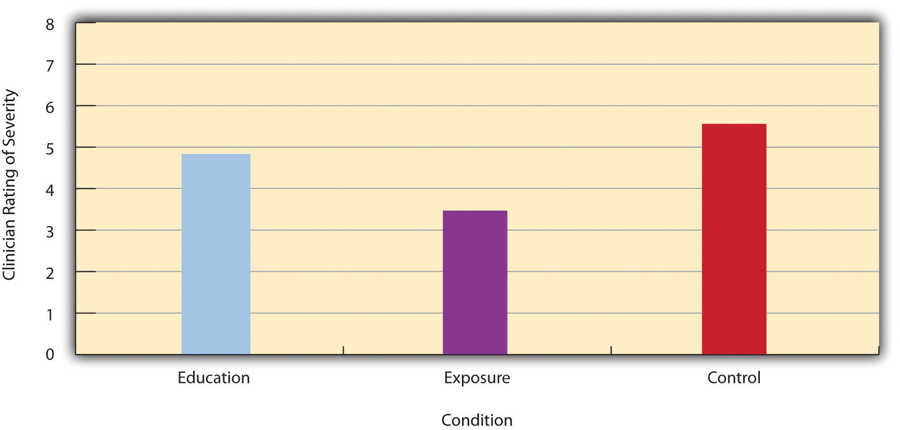
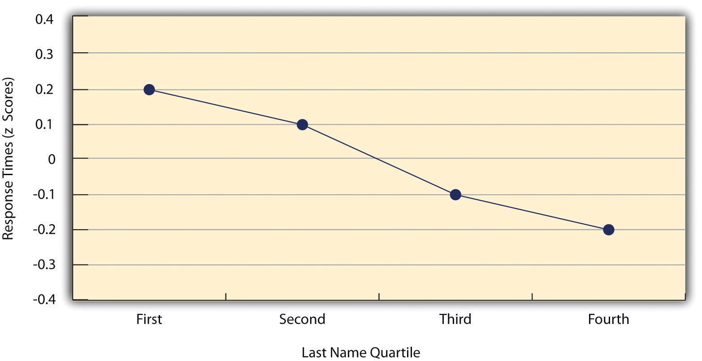
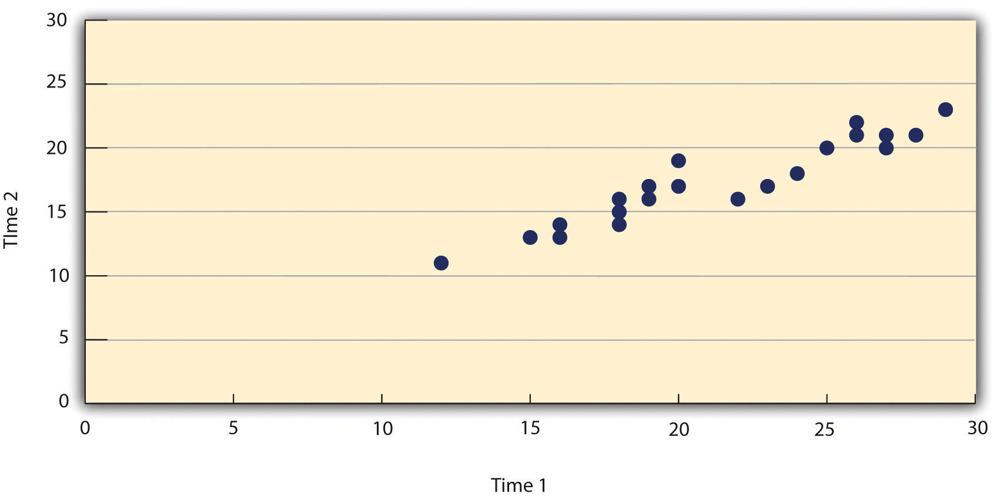
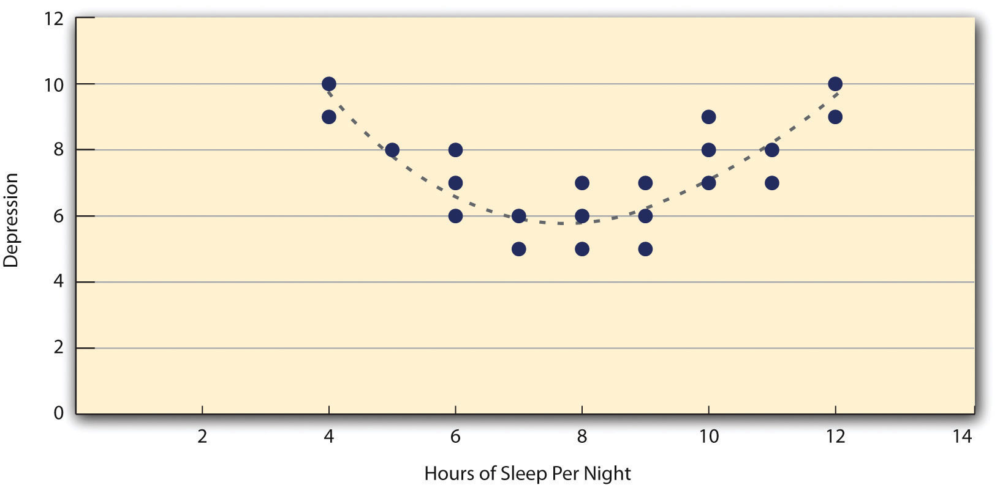
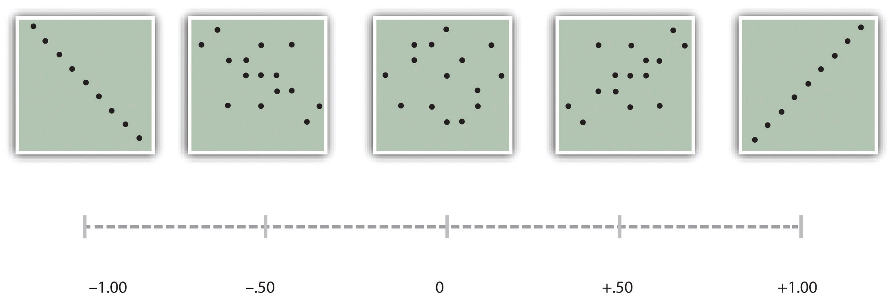
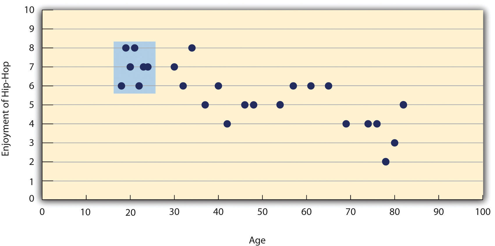

As we have seen throughout this book, most interesting research questions in psychology are about statistical relationships between variables. Recall that there is a statistical relationship between two variables when the average score on one differs systematically across the levels of the other. In this section, we revisit the two basic forms of statistical relationship introduced earlier in the book—differences between groups or conditions and relationships between quantitative variables—and we consider how to describe them in more detail.
Differences between groups or conditions are usually described in terms of the mean and standard deviation of each group or condition. For example, Thomas Ollendick and his colleagues conducted a study in which they evaluated two one-session treatments for simple phobias in children (Ollendick et al., 2009).Ollendick, T. H., Öst, L.-G., Reuterskiöld, L., Costa, N., Cederlund, R., Sirbu, C.,…Jarrett, M. A. (2009). One-session treatments of specific phobias in youth: A randomized clinical trial in the United States and Sweden. Journal of Consulting and Clinical Psychology, 77, 504–516. They randomly assigned children with an intense fear (e.g., to dogs) to one of three conditions. In the exposure condition, the children actually confronted the object of their fear under the guidance of a trained therapist. In the education condition, they learned about phobias and some strategies for coping with them. In the waitlist control condition, they were waiting to receive a treatment after the study was over. The severity of each child’s phobia was then rated on a 1-to-8 scale by a clinician who did not know which treatment the child had received. (This was one of several dependent variables.) The mean fear rating in the education condition was 4.83 with a standard deviation of 1.52, while the mean fear rating in the exposure condition was 3.47 with a standard deviation of 1.77. The mean fear rating in the control condition was 5.56 with a standard deviation of 1.21. In other words, both treatments worked, but the exposure treatment worked better than the education treatment. As we have seen, differences between group or condition means can be presented in a bar graph like that in Figure 12.5 "Bar Graph Showing Mean Clinician Phobia Ratings for Children in Two Treatment Conditions", where the heights of the bars represent the group or condition means. We will look more closely at creating American Psychological Association (APA)-style bar graphs shortly.
Figure 12.5 Bar Graph Showing Mean Clinician Phobia Ratings for Children in Two Treatment Conditions
It is also important to be able to describe the strength of a statistical relationship, which is often referred to as the effect sizeAnother name for measures of relationship strength, including Cohen’s d and Pearson’s r.. The most widely used measure of effect size for differences between group or condition means is called Cohen’s dA measure of relationship strength or “effect size” for a difference between two groups or conditions., which is the difference between the two means divided by the standard deviation:
In this formula, it does not really matter which mean is M1 and which is M2. If there is a treatment group and a control group, the treatment group mean is usually M1 and the control group mean is M2. Otherwise, the larger mean is usually M1 and the smaller mean M2 so that Cohen’s d turns out to be positive. The standard deviation in this formula is usually a kind of average of the two group standard deviations called the pooled-within groups standard deviation. To compute the pooled within-groups standard deviation, add the sum of the squared differences for Group 1 to the sum of squared differences for Group 2, divide this by the sum of the two sample sizes, and then take the square root of that. Informally, however, the standard deviation of either group can be used instead.
Conceptually, Cohen’s d is the difference between the two means expressed in standard deviation units. (Notice its similarity to a z score, which expresses the difference between an individual score and a mean in standard deviation units.) A Cohen’s d of 0.50 means that the two group means differ by 0.50 standard deviations (half a standard deviation). A Cohen’s d of 1.20 means that they differ by 1.20 standard deviations. But how should we interpret these values in terms of the strength of the relationship or the size of the difference between the means? Table 12.4 "Guidelines for Referring to Cohen’s " presents some guidelines for interpreting Cohen’s d values in psychological research (Cohen, 1992).Cohen, J. (1992). A power primer. Psychological Bulletin, 112, 155–159. Values near 0.20 are considered small, values near 0.50 are considered medium, and values near 0.80 are considered large. Thus a Cohen’s d value of 0.50 represents a medium-sized difference between two means, and a Cohen’s d value of 1.20 represents a very large difference in the context of psychological research. In the research by Ollendick and his colleagues, there was a large difference (d = 0.82) between the exposure and education conditions.
Table 12.4 Guidelines for Referring to Cohen’s d and Pearson’s r Values as “Strong,” “Medium,” or “Weak”
| Relationship strength | Cohen’s d | Pearson’s r |
|---|---|---|
| Strong/large | ± 0.80 | ± 0.50 |
| Medium | ± 0.50 | ± 0.30 |
| Weak/small | ± 0.20 | ± 0.10 |
Cohen’s d is useful because it has the same meaning regardless of the variable being compared or the scale it was measured on. A Cohen’s d of 0.20 means that the two group means differ by 0.20 standard deviations whether we are talking about scores on the Rosenberg Self-Esteem scale, reaction time measured in milliseconds, number of siblings, or diastolic blood pressure measured in millimeters of mercury. Not only does this make it easier for researchers to communicate with each other about their results, it also makes it possible to combine and compare results across different studies using different measures.
Be aware that the term effect size can be misleading because it suggests a causal relationship—that the difference between the two means is an “effect” of being in one group or condition as opposed to another. Imagine, for example, a study showing that a group of exercisers is happier on average than a group of nonexercisers, with an “effect size” of d = 0.35. If the study was an experiment—with participants randomly assigned to exercise and no-exercise conditions—then one could conclude that exercising caused a small to medium-sized increase in happiness. If the study was correlational, however, then one could conclude only that the exercisers were happier than the nonexercisers by a small to medium-sized amount. In other words, simply calling the difference an “effect size” does not make the relationship a causal one.
Researcher Janet Shibley Hyde has looked at the results of numerous studies on psychological sex differences and expressed the results in terms of Cohen’s d (Hyde, 2007).Hyde, J. S. (2007). New directions in the study of gender similarities and differences. Current Directions in Psychological Science, 16, 259–263. Following are a few of the values she has found, averaging across several studies in each case. (Note that because she always treats the mean for men as M1 and the mean for women as M2, positive values indicate that men score higher and negative values indicate that women score higher.)
| Mathematical problem solving | +0.08 |
| Reading comprehension | −0.09 |
| Smiling | −0.40 |
| Aggression | +0.50 |
| Attitudes toward casual sex | +0.81 |
| Leadership effectiveness | −0.02 |
Hyde points out that although men and women differ by a large amount on some variables (e.g., attitudes toward casual sex), they differ by only a small amount on the vast majority. In many cases, Cohen’s d is less than 0.10, which she terms a “trivial” difference. (The difference in talkativeness discussed in Chapter 1 "The Science of Psychology" was also trivial: d = 0.06.) Although researchers and nonresearchers alike often emphasize sex differences, Hyde has argued that it makes at least as much sense to think of men and women as fundamentally similar. She refers to this as the “gender similarities hypothesis.”
As we have seen throughout the book, many interesting statistical relationships take the form of correlations between quantitative variables. For example, researchers Kurt Carlson and Jacqueline Conard conducted a study on the relationship between the alphabetical position of the first letter of people’s last names (from A = 1 to Z = 26) and how quickly those people responded to consumer appeals (Carlson & Conard, 2011).Carlson, K. A., & Conard, J. M. (2011). The last name effect: How last name influences acquisition timing. Journal of Consumer Research. doi: 10.1086/658470 In one study, they sent e-mails to a large group of MBA students, offering free basketball tickets from a limited supply. The result was that the further toward the end of the alphabet students’ last names were, the faster they tended to respond. These results are summarized in Figure 12.7 "Line Graph Showing the Relationship Between the Alphabetical Position of People’s Last Names and How Quickly Those People Respond to Offers of Consumer Goods".
Figure 12.7 Line Graph Showing the Relationship Between the Alphabetical Position of People’s Last Names and How Quickly Those People Respond to Offers of Consumer Goods
Such relationships are often presented using line graphs or scatterplots, which show how the level of one variable differs across the range of the other. In the line graph in Figure 12.7 "Line Graph Showing the Relationship Between the Alphabetical Position of People’s Last Names and How Quickly Those People Respond to Offers of Consumer Goods", for example, each point represents the mean response time for participants with last names in the first, second, third, and fourth quartiles (or quarters) of the name distribution. It clearly shows how response time tends to decline as people’s last names get closer to the end of the alphabet. The scatterplot in Figure 12.8 "Statistical Relationship Between Several College Students’ Scores on the Rosenberg Self-Esteem Scale Given on Two Occasions a Week Apart", which is reproduced from Chapter 5 "Psychological Measurement", shows the relationship between 25 research methods students’ scores on the Rosenberg Self-Esteem Scale given on two occasions a week apart. Here the points represent individuals, and we can see that the higher students scored on the first occasion, the higher they tended to score on the second occasion. In general, line graphs are used when the variable on the x-axis has (or is organized into) a small number of distinct values, such as the four quartiles of the name distribution. Scatterplots are used when the variable on the x-axis has a large number of values, such as the different possible self-esteem scores.
Figure 12.8 Statistical Relationship Between Several College Students’ Scores on the Rosenberg Self-Esteem Scale Given on Two Occasions a Week Apart
The data presented in Figure 12.8 "Statistical Relationship Between Several College Students’ Scores on the Rosenberg Self-Esteem Scale Given on Two Occasions a Week Apart" provide a good example of a positive relationship, in which higher scores on one variable tend to be associated with higher scores on the other (so that the points go from the lower left to the upper right of the graph). The data presented in Figure 12.7 "Line Graph Showing the Relationship Between the Alphabetical Position of People’s Last Names and How Quickly Those People Respond to Offers of Consumer Goods" provide a good example of a negative relationship, in which higher scores on one variable tend to be associated with lower scores on the other (so that the points go from the upper left to the lower right).
Both of these examples are also linear relationships, in which the points are reasonably well fit by a single straight line. Nonlinear relationshipsA statistical relationship in which as the X variable increases, the Y variable does not increase or decrease at a constant rate. Such relationships are best described by a curved line. are those in which the points are better fit by a curved line. Figure 12.9 "A Hypothetical Nonlinear Relationship Between How Much Sleep People Get per Night and How Depressed They Are", for example, shows a hypothetical relationship between the amount of sleep people get per night and their level of depression. In this example, the line that best fits the points is a curve—a kind of upside down “U”—because people who get about eight hours of sleep tend to be the least depressed, while those who get too little sleep and those who get too much sleep tend to be more depressed. Nonlinear relationships are not uncommon in psychology, but a detailed discussion of them is beyond the scope of this book.
Figure 12.9 A Hypothetical Nonlinear Relationship Between How Much Sleep People Get per Night and How Depressed They Are
As we saw earlier in the book, the strength of a correlation between quantitative variables is typically measured using a statistic called Pearson’s r. As Figure 12.10 "Pearson’s " shows, its possible values range from −1.00, through zero, to +1.00. A value of 0 means there is no relationship between the two variables. In addition to his guidelines for interpreting Cohen’s d, Cohen offered guidelines for interpreting Pearson’s r in psychological research (see Table 12.4 "Guidelines for Referring to Cohen’s "). Values near ±.10 are considered small, values near ± .30 are considered medium, and values near ±.50 are considered large. Notice that the sign of Pearson’s r is unrelated to its strength. Pearson’s r values of +.30 and −.30, for example, are equally strong; it is just that one represents a moderate positive relationship and the other a moderate negative relationship. Like Cohen’s d, Pearson’s r is also referred to as a measure of “effect size” even though the relationship may not be a causal one.
Figure 12.10 Pearson’s r Ranges From −1.00 (Representing the Strongest Possible Negative Relationship), Through 0 (Representing No Relationship), to +1.00 (Representing the Strongest Possible Positive Relationship)
The computations for Pearson’s r are more complicated than those for Cohen’s d. Although you may never have to do them by hand, it is still instructive to see how. Computationally, Pearson’s r is the “mean cross-product of z scores.” To compute it, one starts by transforming all the scores to z scores. For the X variable, subtract the mean of X from each score and divide each difference by the standard deviation of X. For the Y variable, subtract the mean of Y from each score and divide each difference by the standard deviation of Y. Then, for each individual, multiply the two z scores together to form a cross-product. Finally, take the mean of the cross-products. The formula looks like this:
Table 12.5 "Sample Computations for Pearson’s " illustrates these computations for a small set of data. The first column lists the scores for the X variable, which has a mean of 4.00 and a standard deviation of 1.90. The second column is the z score for each of these raw scores. The third and fourth columns list the raw scores for the Y variable, which has a mean of 40 and a standard deviation of 11.78, and the corresponding z scores. The fifth column lists the cross-products. For example, the first one is 0.00 multiplied by −0.85, which is equal to 0.00. The second is 1.58 multiplied by 1.19, which is equal to 1.88. The mean of these cross-products, shown at the bottom of that column, is Pearson’s r, which in this case is +.53. There are other formulas for computing Pearson’s r by hand that may be quicker. This approach, however, is much clearer in terms of communicating conceptually what Pearson’s r is.
Table 12.5 Sample Computations for Pearson’s r
| X | zx | Y | zy | zxzy |
|---|---|---|---|---|
| 4 | 0.00 | 30 | −0.85 | 0.00 |
| 7 | 1.58 | 54 | 1.19 | 1.88 |
| 2 | −1.05 | 23 | −1.44 | 1.52 |
| 5 | 0.53 | 43 | 0.26 | 0.13 |
| 2 | −1.05 | 50 | 0.85 | −0.89 |
| Mx = 4.00 | My = 40.00 | r = 0.53 | ||
| SDx = 1.90 | SDy = 11.78 |
There are two common situations in which the value of Pearson’s r can be misleading. One is when the relationship under study is nonlinear. Even though Figure 12.9 "A Hypothetical Nonlinear Relationship Between How Much Sleep People Get per Night and How Depressed They Are" shows a fairly strong relationship between depression and sleep, Pearson’s r would be close to zero because the points in the scatterplot are not well fit by a single straight line. This means that it is important to make a scatterplot and confirm that a relationship is approximately linear before using Pearson’s r. The other is when one or both of the variables have a limited range in the sample relative to the population. This is referred to as restriction of rangeWhen the data used to assess a statistical relationship include a limited range of scores on either the X or Y variable, relative to the range of scores in the population. This makes the statistical relationships appear weaker than it actually is.. Assume, for example, that there is a strong negative correlation between people’s age and their enjoyment of hip hop music as shown by the scatterplot in Figure 12.11 "Hypothetical Data Showing How a Strong Overall Correlation Can Appear to Be Weak When One Variable Has a Restricted Range". Pearson’s r here is −.77. However, if we were to collect data only from 18- to 24-year-olds—represented by the shaded area of Figure 12.11 "Hypothetical Data Showing How a Strong Overall Correlation Can Appear to Be Weak When One Variable Has a Restricted Range"—then the relationship would seem to be quite weak. In fact, Pearson’s r for this restricted range of ages is 0. It is a good idea, therefore, to design studies to avoid restriction of range. For example, if age is one of your primary variables, then you can plan to collect data from people of a wide range of ages. Because restriction of range is not always anticipated or easily avoidable, however, it is good practice to examine your data for possible restriction of range and to interpret Pearson’s r in light of it. (There are also statistical methods to correct Pearson’s r for restriction of range, but they are beyond the scope of this book).
Figure 12.11 Hypothetical Data Showing How a Strong Overall Correlation Can Appear to Be Weak When One Variable Has a Restricted Range
The overall correlation here is −.77, but the correlation for the 18- to 24-year-olds (in the blue box) is 0.
Practice: The following data represent scores on the Rosenberg Self-Esteem Scale for a sample of 10 Japanese college students and 10 American college students. (Although hypothetical, these data are consistent with empirical findings [Schmitt & Allik, 2005].Schmitt, D. P., & Allik, J. (2005). Simultaneous administration of the Rosenberg Self-Esteem Scale in 53 nations: Exploring the universal and culture-specific features of global self-esteem. Journal of Personality and Social Psychology, 89, 623–642.) Compute the means and standard deviations of the two groups, make a bar graph, compute Cohen’s d, and describe the strength of the relationship in words.
| Japan | United States |
|---|---|
| 25 | 27 |
| 20 | 30 |
| 24 | 34 |
| 28 | 37 |
| 30 | 26 |
| 32 | 24 |
| 21 | 28 |
| 24 | 35 |
| 20 | 33 |
| 26 | 36 |
Practice: The hypothetical data that follow are extroversion scores and the number of Facebook friends for 15 college students. Make a scatterplot for these data, compute Pearson’s r, and describe the relationship in words.
| Extroversion | Facebook Friends |
|---|---|
| 8 | 75 |
| 10 | 315 |
| 4 | 28 |
| 6 | 214 |
| 12 | 176 |
| 14 | 95 |
| 10 | 120 |
| 11 | 150 |
| 4 | 32 |
| 13 | 250 |
| 5 | 99 |
| 7 | 136 |
| 8 | 185 |
| 11 | 88 |
| 10 | 144 |